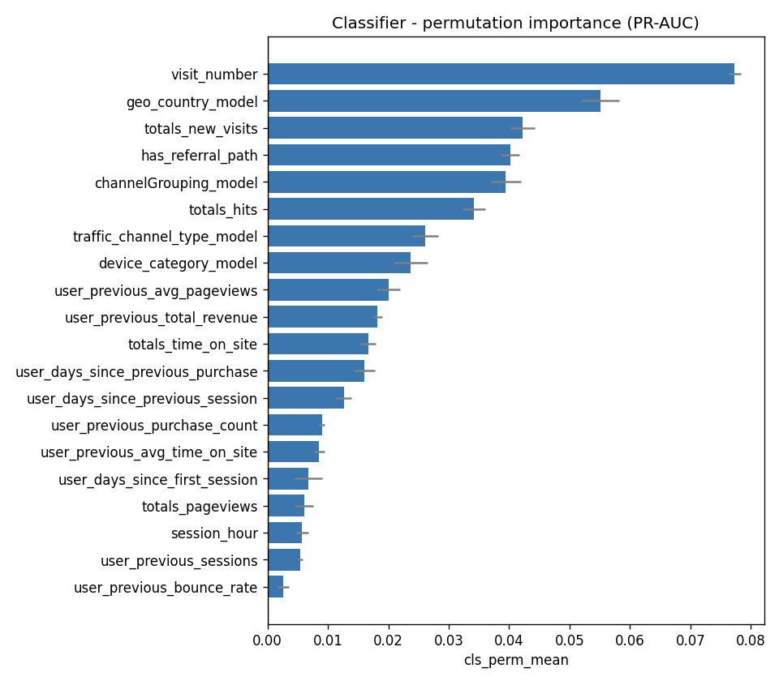
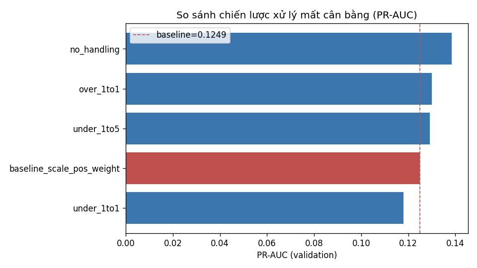

Tổng quan 4 bước
Mỗi bước có một notebook riêng trong week_4/, đều self-contained và tuân thủ
quy tắc không leakage.
Feature Importance
Built-in (gain/split) + permutation importance để có mốc tham chiếu.
Feature V2
Thêm 14 feature categorical chi tiết + sparse flags, so PR-AUC.
Imbalance
So 6 chiến lược under/over/SMOTENC vs
scale_pos_weight.
Finetune & Test
Optuna trên feature lọc + phân phối thật, chốt model, đánh giá test.
Kết quả cuối cùng (test)
Model mới generalize tốt: PR-AUC trên test (0.157) còn cao hơn validation (0.143). Giống week_3, thế mạnh là ranking các user-session giá trị cao.
NB07 · Feature Importance
Tạo mốc tham chiếu trước khi can thiệp. Ưu tiên permutation importance vì built-in
gain thiên vị feature high-cardinality.
Bộ feature V1 baseline (27 feature, kế thừa week_3)
| Nhóm | Feature |
|---|---|
| Current-session numeric/time (9) | visit_number, totals_hits, totals_pageviews, totals_time_on_site, totals_new_visits, is_bounce, session_hour, session_day_of_week, session_month |
| Categorical (4) | channelGrouping_model, traffic_channel_type_model, device_category_model, geo_country_model |
| Sparse flags (3) | has_gclid, has_traffic_campaign, has_referral_path |
| User-history (9) | user_previous_sessions, user_days_since_first_session, user_days_since_previous_session, user_previous_avg_pageviews, user_previous_avg_time_on_site, user_previous_bounce_rate, user_previous_purchase_count, user_previous_total_revenue, user_days_since_previous_purchase |
| Derived flags (2) | is_first_session, has_previous_purchase |
Lõi của model
Feature yếu (permutation ≤ 0) — ứng viên loại bỏ
Permutation importance — classifier (top 20)
Đo mức giảm metric khi xáo trộn từng feature trên validation.

NB08 · Thêm Feature V2
Thêm 14 feature (4 categorical chi tiết + 10 sparse flag), nâng tổng lên 41 feature.
Rare-category bucketing (count < 200 → __other__) fit train-only.
14 feature V2 được thêm
| Nhóm | Feature |
|---|---|
| Categorical (4) | traffic_source_clean_model, traffic_medium_clean_model, browser_family_model, os_family_model |
| Sparse flags (10) | is_direct_traffic, is_paid_traffic, is_organic_traffic, is_referral_traffic, has_traffic_keyword, has_traffic_ad_content, has_geo_region, has_geo_metro, has_custom_dimension, is_socially_engaged |
So sánh classifier (cùng threshold 0.5)
| Bộ feature | PR-AUC | recall@0.5 | precision@0.5 |
|---|---|---|---|
| V1 (27 feature) | 0.1264 | 0.828 | 0.051 |
| V1 + V2 (41 feature) | 0.1249 | 0.854 | 0.052 |
NB09 · Xử lý mất cân bằng
So 6 chiến lược trên cùng validation set, chỉ resample train split, bỏ
scale_pos_weight khi đã resample.
| Chiến lược | PR-AUC | recall@0.5 | precision@0.5 | train rows |
|---|---|---|---|---|
| no_handling (phân phối thật) | 0.1385 | 0.007 | 0.471 | 1.53M |
| over 1:1 | 0.1300 | 0.852 | 0.052 | 3.02M |
| under 1:5 | 0.1292 | 0.579 | 0.102 | 0.12M |
| baseline scale_pos_weight | 0.1249 | 0.854 | 0.052 | 1.53M |
| SMOTENC (ratio 0.3) | 0.1246 | 0.009 | 0.370 | 1.96M |
| under 1:1 | 0.1179 | 0.881 | 0.049 | 0.04M |
So sánh PR-AUC theo chiến lược
Đường đứt đỏ = baseline scale_pos_weight.

scale_pos_weight/oversampling chỉ dịch ngưỡng hiệu dụng chứ
không giúp model tách lớp tốt hơn. Với LightGBM trên dữ liệu lệch, chọn threshold mới là
chìa khóa, không phải resampling.NB10 · Finetune & Chốt model
Bộ feature V1+V2 lọc bớt = 33 feature (bỏ 8 feature yếu). Đã kiểm chứng lọc không làm hại: PR-AUC 0.1385 (full) → 0.1418 (lọc). Train phân phối thật, finetune bằng Optuna (TPE) + early stopping; enqueue cấu hình baseline để best ≥ baseline.
Feature changelog (bỏ gì / thêm gì / giữ gì)
| Mốc | Số feature | Thay đổi |
|---|---|---|
| V1 baseline (week_3) | 27 | điểm xuất phát |
| + V2 (NB08) | 41 | thêm 14 (4 categorical + 10 flag) |
| − feature yếu (NB10) | 33 | bỏ 8 (permutation ≤ 0) |
8 feature bị bỏ (lý do & nguồn)
| Feature | Nhóm gốc | Lý do | Phát hiện |
|---|---|---|---|
session_month | V1 time | permutation ≤ 0 với classifier | NB07 |
is_first_session | V1 derived flag | trùng tín hiệu user_previous_sessions | NB07 |
is_bounce | V1 session | permutation ≤ 0 | NB07 |
has_gclid | V1 flag | permutation ≤ 0 | NB07 |
has_traffic_campaign | V1 flag | permutation ≤ 0 | NB07 |
has_previous_purchase | V1 derived flag | trùng tín hiệu user_previous_purchase_count | NB07 |
is_socially_engaged | V2 flag | permutation ≈ 0, gần như hằng số | NB08 |
is_organic_traffic | V2 flag | permutation ≤ 0; đã có traffic_channel_type_model | NB08 |
Trong 14 feature V2 thêm ở NB08, 12/14 được giữ sau lọc — chỉ 2 flag
(is_socially_engaged, is_organic_traffic) bị loại.
33 feature cuối cùng (bộ dùng để finetune & deploy)
| Nhóm | Feature |
|---|---|
| Current-session numeric/time (7) | visit_number, totals_hits, totals_pageviews, totals_time_on_site, totals_new_visits, session_hour, session_day_of_week |
| Categorical (8) | channelGrouping_model, traffic_channel_type_model, device_category_model, geo_country_model, traffic_source_clean_model, traffic_medium_clean_model, browser_family_model, os_family_model |
| Sparse flags (9) | has_referral_path, is_direct_traffic, is_paid_traffic, is_referral_traffic, has_traffic_keyword, has_traffic_ad_content, has_geo_region, has_geo_metro, has_custom_dimension |
| User-history (9) | user_previous_sessions, user_days_since_first_session, user_days_since_previous_session, user_previous_avg_pageviews, user_previous_avg_time_on_site, user_previous_bounce_rate, user_previous_purchase_count, user_previous_total_revenue, user_days_since_previous_purchase |
Kết quả finetune
| Model | Metric | Baseline lọc | Finetuned (Optuna) |
|---|---|---|---|
| Classifier | PR-AUC (val) | 0.1418 | 0.1425 |
| Regressor | RMSE-log (val) | 1.0545 | 1.0370 |
Threshold
Dữ liệu lệch nên không dùng 0.5. Chọn F1-optimal = 0.127 trên validation.
Final Test Evaluation (chốt model — test chạy 1 lần)
| Metric | Validation | Test |
|---|---|---|
| PR-AUC | 0.1425 | 0.1567 |
| Precision @0.127 | 0.171 | 0.183 |
| Recall @0.127 | 0.277 | 0.286 |
| F1 @0.127 | 0.211 | 0.223 |
| Conditional RMSE-log | 1.037 | 1.095 |
| Revenue capture top 10% | 77.8% | 84.8% |
Vệ sinh dữ liệu
| Bước | Fit từ đâu | Test dùng để |
|---|---|---|
| Rare-mapping & category levels (NB08) | train | chỉ transform |
| Optuna scoring / filtering check (NB10) | train split (fit), validation (score) | không dùng |
| Chọn threshold (NB10) | validation | không dùng |
| Final test (NB10 mục 9) | — | predict 1 lần, không refit |
→ Không có rò rỉ test vào quá trình fit/tune/chọn threshold.
Kết luận
- Feature importance:
visit_number,totals_hits, user-history là lõi; 8 feature yếu nên loại. - Feature V2: không cải thiện classifier; chỉ giúp regressor nhẹ.
- Imbalance: resampling/
scale_pos_weightkhông cải thiện ranking; train phân phối thật + chọn threshold là đúng hướng. - Finetune: lọc feature giúp PR-AUC tăng; Optuna + enqueue baseline đảm bảo không tệ hơn baseline. Model mới đạt PR-AUC test 0.157, top 10% revenue capture 84.8%.
models/finetuned_<version>/, đọc
selected_threshold và feature_columns từ finetune_metadata.json,
metric cuối ở final_test_metrics.json.